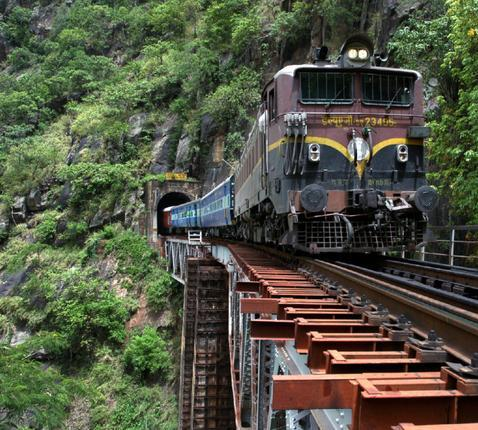

Araku
Escape into the breathtaking landscapes of Araku Valley, a serene hill destination surrounded by the lush greenery of the Eastern Ghats. Famous for its coffee plantations, mist-covered hills, and tribal heritage, Araku offers a refreshing retreat into nature’s tranquility. The scenic train journey leading to the valley passes through numerous tunnels, bridges, and waterfalls, making the journey itself an unforgettable experience. Rolling hills covered with plantations, cool mountain air, and peaceful valleys create a mesmerizing atmosphere for visitors. The region’s tribal culture and local traditions further add depth and uniqueness to the experience. Araku Valley’s combination of scenic beauty, pleasant climate, and cultural richness makes it one of Andhra Pradesh’s most enchanting destinations.